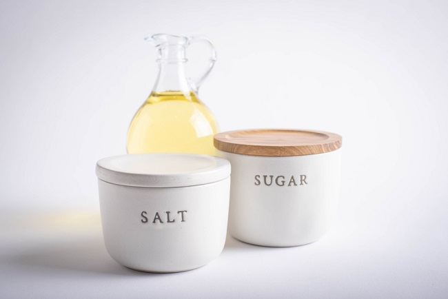

Batasan Konsumsi Gula, Garam, dan Lemak
Konsumsi gula, garam, dan lemak berlebihan dapat meningkatkan risiko penyakit, seperti diabetes, hipertensi, dan penyakit jantung. Oleh karena itu, penting untuk membatasi asupan ketiga bahan tersebut sesuai rekomendasi gizi. Misalnya, konsumsi gula maksimal 50 gram per hari, garam 5 gram, dan lemak jenuh dibatasi untuk menjaga kesehatan tubuh.